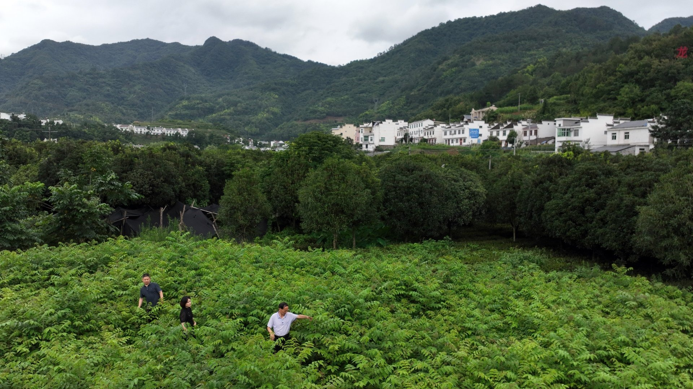
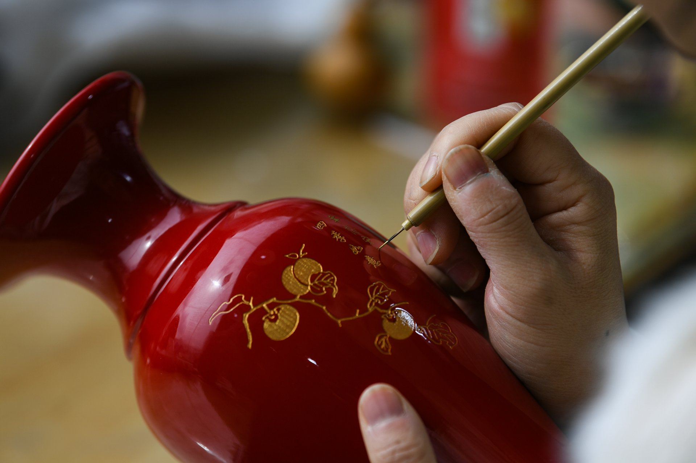

생칠 도매·공급
산지 직송 · 배치 검사 · 톤 단위 공급
평리는 국가가 지정한 「중국 칠수의 고향」이며, 『본초강목』이 「금주의 것을 으뜸으로 여기므로 세상에서 금칠이라 부른다」고 기록한 금주이기도 합니다. 이곳에서 생산되는 우왕칠은 우루시올 함량이 높고 건조성이 좋아 고건축 수리, 목공 마감, 공업 방식의 첫 번째 선택지가 됩니다.
우리는 진바 산맥에서 5,000무가 넘는 칠림을 관리하며, 칠 채취와 음건, 여과, 검사까지 전 공정을 자체 관리합니다. 도매 고객에게는 배치마다 제3자 검사 보고서와 보관 샘플을 제공합니다. 킬로그램 단위 시험 샘플부터 톤 단위 연간 계약까지 안정적으로 공급합니다.
백 리 천 번의 칼질로 얻는 한 근의 칠——그 한 근마다 분명한 출처가 있습니다.
요구에서 납품까지의 완전한 경로로,모든 단계에 기준과 기록, 추적이 있습니다.
다음은 일부 제휴 사례 발췌입니다. 자세한 내용과 추가 사례는 비즈니스 팀으로 문의해 주십시오.

제휴 사례 제휴 사례
제휴 사례

제휴 사례